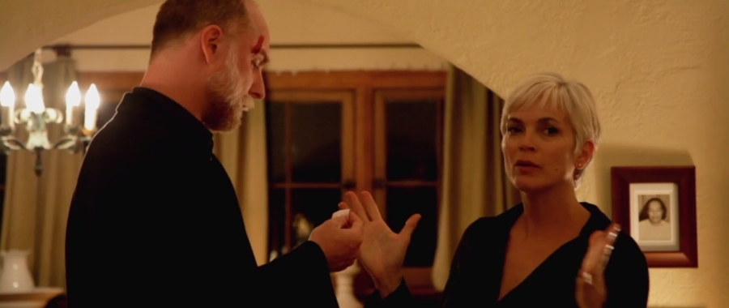
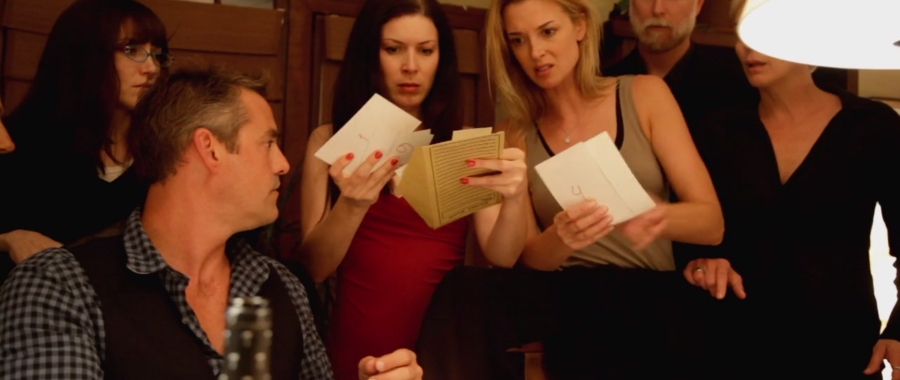
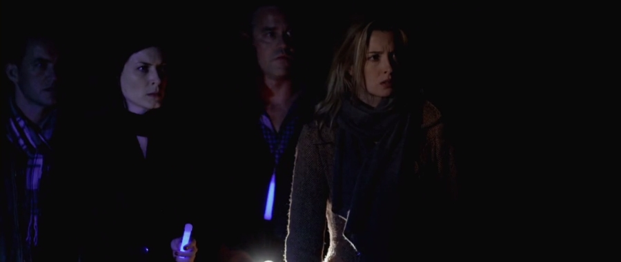

Coherence is an American-British science fiction thriller directed by James Ward Byrkit as his directorial debut. After working on several blockbuster films, Byrkit craved the days when filmmaking was all about the simplicity and purity of filming: “Just a camera in your hand, an idea and some actress that you trust”. To prove the point, he chose for the location of this low-budget film his own home with almost the whole story taking place in its dining room. Prior the filming, the director spent about a year drawing charts, diagrams and maps of houses, with arrows pointing where everyone was going, to try and keep track of all the different realities. The entire film was then shot over the course of five nights without special effects, with a minimal crew and without a scrip. Although Byrkit did have a specific idea of how the film would unfold, he gave the actors only the basic outline of their characters, motivations, and major plot points, leaving them with a room for improvisation.
Four couples: Mike (Nicholas Brendon) & Lee (Lorene Scafaria), Kevin (Maury Sterling) & Emily (Emily Baldoni), Hugh (Hugo Armstrong) & Beth (Elizabeth Gracen) and Amir (Alex Manugian) & Laurie (Lauren Maher) gather for a dinner party at the Mike and Lee’s house on an evening when a comet is passing overhead.
On the way to the party, Emily’s mobile suddenly loses reception, before its screen spontaneously cracks. She tells the other dinner guests about the experience and blames this on a passing comet which she had heard about in the news earlier. She also tells them how a flyby of another comet a century earlier had caused people to experience strange phenomena. Her story is ridiculed until the other guests discover that none of their mobile phones is working and that Hugh’s mobile has also shattered.
Suddenly, the house loses power and they find themselves in total darkness. The friends light the candles and open a box of blue glow sticks (leaving the second box, of red glow sticks, sealed) to provide some light. After going outside, they see that the strange blackout affected the whole neighbourhood, except for a single house a few blocks away. Hugh and Amir decide to walk to that house to find out what has caused the power failure and ask its occupants whether they have a working telephone. While they are away, Mike manages to turn on his house’s generator, restoring power. After a few moments, Hugh and Amir return, with Hugh wounded on his forehead and Amir carrying a box which they have found at the other house. Hugh explains that he became startled when he peeked through the window into the other house and saw a dinner table laid out exactly like theirs. Opening the box, they are bemused to find a ping pong bat and photos of all of them, each with a number written on the back. Amir notices that the photo of him was taken that night, inside the house (even though he cannot recall anybody taking his picture), and Emily, perplexed, observes that the numbers on the photographs are written in her handwriting (even though she cannot recall writing anything that night).
Mike, Laurie, Emily and Kevin don’t believe guys’ account of events and decide to go to the other house to see what is really going on. About halfway towards the house they pass through a strange zone even more dark than the rest of the surroundings. Mike, to his utter astonishment, realises that the other house, including its interior, is, in fact, the exact copy of his house. Startled, the group begins to retreat back to their house, only to encounter another group of four people. To their utmost horror, the friends realise that they are looking at completely identical copies of themselves, with the only difference being that the members of the other group have in their hands red glow sticks. Both groups panic and flee to their respective houses.
Back at the house, Beth recalls that her brother-in-law was planning to give a lecture about the many-worlds hypothesis and that the book, containing notes relating to this theory, is in her car. She retrieves the book and after studying it, the friends conclude that the passing of the comet caused branching of their reality into dozens, possibly hundreds of alternate timelines, each containing slightly different versions of themselves. They also deduce that there are no two houses and every time they pass through the strange darkened area, they emerge at a new, completely random, version of the same house.
The friends ponder over the gravity of this revelation, and, after realising that there is no obvious way of telling which versions of their selves belong to which, decide to create some means of identification for all of them. They use photos of themselves (taking photo of Amir against the wall, as he is the only one who doesn’t have any portrait on him) and then take turns to roll a die, writing the numbers thus obtained on the back of each picture, before putting all the photos in a box together with a randomly chosen item that would serve as a unique identifier of their respective version of the house.
Emily suddenly remembers the box guys brought previously from the ‘other’ house, opens it and asks her friends what number they have had written on the back of their individual photographs. To her shock and astonishment, some of them recall numbers from ‘their’ box and some from the ‘other’ box. What is more, one of the friends’ mobiles is now not broken and, when challenged to recall the object that they have picked as the identifier of ‘their’ house, the owner of the mobile remembers a different object to that which Emily just put into the box.
Now the real chaos ensues, as the friends start to argue who is who, and which partner belongs to which, with their different versions accusing each other of being ‘impostors’, bursting in and running out of the house, snatching each others’ ‘ID boxes’ and even attacking each other…

If you thought that Schrödinger’s cat thought experiment was confusing, watch this gripping sci-fi mystery thriller, and if, by the end of the film, you still know which version of Amir, Beth, Emily, Hugh, Kevin, Laurie, Lee and Mike belong to which version of their reality, you are ready to challenge Stephen Hawking to an intellectual duel.
Blue glow sticks, red glow sticks, blue glow sticks, red glow sticks – argh! I give up.